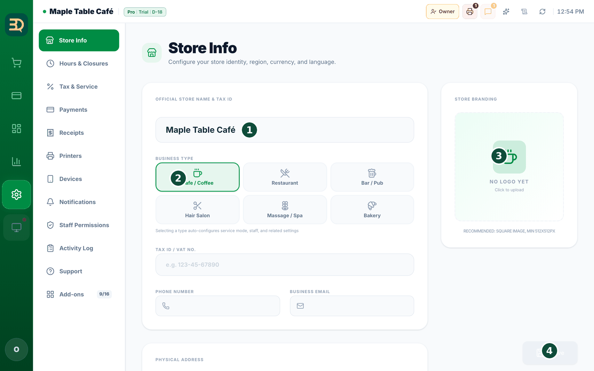
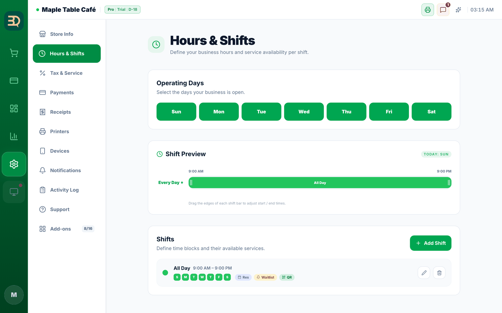
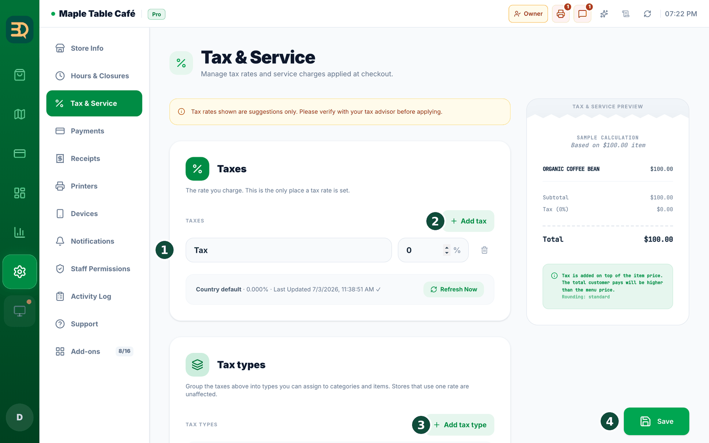
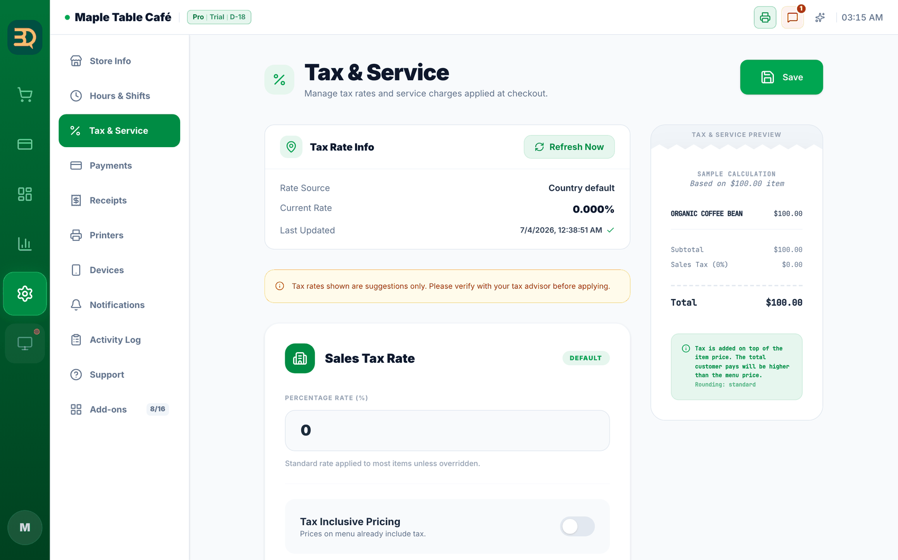
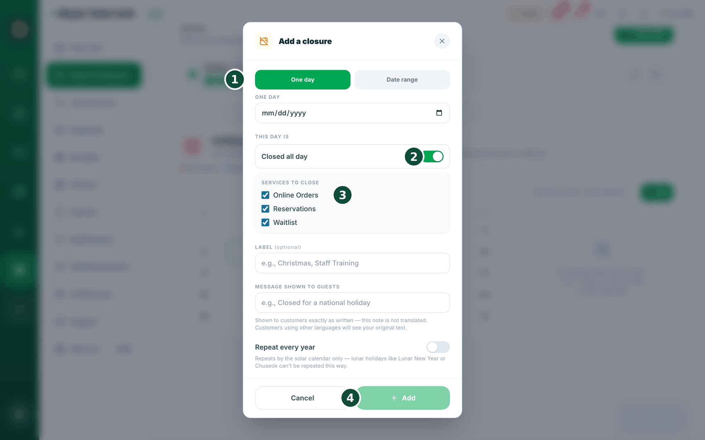

3매장 설정하기
이제 가게의 기본 정보를 입력합니다. 한 번만 하면 됩니다. 천천히 한 칸씩 채워 주세요.
- 왼쪽 사이드바 아래쪽의 Settings(설정, 톱니 아이콘)를 탭합니다.
- Store Info를 탭합니다.
- 가게 이름, 주소, 사용하는 화폐(달러나 파운드 같은)를 입력합니다.
- 업종이 맞는지 확인합니다 (카페, 식당 등). 이 설정으로 테이블, 직원, PIN 로그인이 구성됩니다.
- Hours & Closures를 열고 가게가 문을 여는 시간을 입력합니다. 이 시간을 기준으로 BrewDesk가 손님이 언제 테이블을 예약하고, 줄을 서고, 휴대폰으로 주문할 수 있는지 정합니다.
- 세금(tax) 설정을 엽니다. BrewDesk가 알맞은 세금을 더해 주므로 직접 계산할 필요가 없습니다.
- 로고와 아래쪽 감사 메시지 같은 영수증 정보를 추가합니다.
- Save를 탭합니다. 이것으로 가게 설정이 끝납니다.
알아두기: 나라마다 전자세금계산서·전자기록 의무가 달라서, 아직 지원하지 않는 나라가 있습니다. 그런 나라를 선택하고 저장하면 "This country is not supported."(이 국가는 지원되지 않습니다)라고 안내합니다. 목록에 없는 나라라면 지원팀에 문의해 주세요.


세금 설정
세금은 판매할 때 정부가 부과하는 추가 금액입니다. 한 번만 설정하면 BrewDesk가 모든 판매에 자동으로 더해 줍니다. 세율을 설정해 보겠습니다.
왼쪽 사이드바 아래쪽 Settings(설정)에서 Settings › Tax & Service를 엽니다.
- BrewDesk가 지역 세율을 제안할 수 있으나, 확인은 사장님이 합니다. "Refresh Now"를 탭해 제안 세율을 가져오거나, 직접 입력해 주세요.
- Taxes 카드의 세금 줄에서 이름 칸(기본값 "Tax") 오른쪽의 세율 칸(숫자 칸, 오른쪽에 %가 붙어 있습니다)에 세율을 입력합니다 — 예를 들어 8%라면 8을 입력합니다.
- 세금 표시 방식을 선택합니다. "Tax Inclusive Pricing"이 ON이면 표시 가격에 세금이 이미 포함됩니다. OFF이면 결제할 때 세금이 위에 더해집니다.
- 선택 사항: "Service Charge"(% 또는 정액)를 추가하고, 서비스 차지에 세금을 부과할지 선택합니다.
- "Save"를 탭합니다. 오른쪽 실시간 영수증 미리보기에 예시 계산이 표시되므로 올바른지 확인할 수 있습니다.
- 세율은 제안일 뿐이라는 안내가 표시됩니다 — 세무사와 함께 확인해 주세요.
Settings › Payments의 별개 설정이며, 현금에만 적용됩니다. 현금 결제 우수리를 참고해 주세요.품목마다 세금이 다르다면? 「세금 유형(Tax types)」
어떤 지역은 물건마다 세금이 다릅니다 — 예를 들어 식료품은 세금이 없고 따뜻한 음료는 세금이 붙는 식입니다. 그런 매장이라면 BrewDesk에 세금 유형을 몇 개 만들어 두고, 품목마다 알맞은 유형을 선택하면 됩니다. 모든 품목이 같은 세율이면 건너뛰어도 됩니다 — 아무것도 바뀌지 않습니다.
Settings › Tax & Service에서 "Tax types" 카드를 찾습니다. 필요한 지역(예: 캐나다)의 매장에는 표시되며, 일부 미국 매장은 직접 켜면 표시됩니다. (이 카드의 버튼 이름은 영어로 표시됩니다.)
- "Set up tax types"를 누릅니다. 해당 지역의 기본 세금이 자동으로 채워집니다. 다르게 되어 있으면 노란 안내 "These taxes don't match the standard for your region."가 표시됩니다 — "Use regional standard"를 누르면 한 번에 수정됩니다.
- "Taxes" 아래에서 세금마다 "Tax name"(세금 이름)과 "Tax rate (%)"(세율)를 입력합니다. 다른 세금이 더 있으면 "Add tax"를 누릅니다. 세율은 오직 여기에서만 정합니다.
- "Tax types" 아래에서 "Add tax type"을 누르고 "Tax type name"(유형 이름)을 입력한 뒤, "Taxes that apply"(적용할 세금)에 체크합니다. 세금이 전혀 없는 물건은 "No tax (exempt)"를 선택합니다.
- 유형 하나에는 "Default"(기본) 표시가 붙습니다. 자체 유형이 없는 품목과 서비스 요금에는 이 유형이 사용됩니다.
- 왼쪽 사이드바의 Manage(관리) › Menu Items(메뉴 항목)로 이동합니다. 카테고리에서는 "Tax type for this category"를, 품목에서는 "Tax type"을 선택합니다. 해당 품목만 세금이 다르지 않다면 "Follow category"(카테고리 따라가기)를 그대로 두어 주세요.

알아두면 좋습니다: 영수증과 리포트에는 세금이 한 줄씩 따로 표시되므로, 이름이 같은 세금 두 개는 만들 수 없습니다 — 이름을 바꾸라고 안내합니다. 매사추세츠·로드아일랜드처럼 한도 초과분에만 세금을 부과하는 곳은 금액 조건으로 똑같이 만들 수 없어서 경고가 표시됩니다. 설정은 반드시 세무 전문가와 확인해 주세요.

휴무 & 특별 영업일
쉬는 날을 미리 등록해 두면, 그날은 손님이 예약도 줄 서기도 온라인 주문도 할 수 없도록 BrewDesk가 자동으로 막아 줍니다. 명절, 직원 교육, 갑자기 문을 닫는 날 모두 여기에서 정합니다.
Settings › Hours & Closures(영업일 · 시간)를 열고 아래쪽 "Holidays & Special Days"(휴무 & 특별 영업일)를 확인합니다. 예약 애드온을 켜지 않아도 사용할 수 있습니다. 화면 왼쪽은 달력, 오른쪽은 보고 있는 달에 등록된 휴무 리스트입니다.
- 리스트 위 "+ Add"를 탭하거나, 달력에서 날짜를 탭하거나, 리스트의 기존 항목을 탭합니다 — 팝업이 열립니다.
- 날짜를 선택합니다. "One day"(하루)는 날짜 하나, "Date range"(기간)는 시작일~종료일을 선택해 연휴처럼 여러 날을 한 번에 등록합니다(최대 31일).
- "Closed all day"(문을 닫습니다) 토글을 켭니다. 켜면 "Services to close"(중지할 서비스)에서 무엇을 멈출지 선택합니다 — 예약, 대기열, 온라인·QR 주문. 하나만 멈추고 나머지는 열어 둘 수도 있습니다.
- "Label"(라벨)에 "추석", "직원 교육"처럼 짧게 입력합니다. "Message shown to guests"(손님에게 보일 안내)에 입력한 문장은 손님 화면에 그대로 표시됩니다.
- Save를 탭합니다. 달력과 오른쪽 리스트에 바로 반영됩니다.

쉬는 날은 한 번만 등록하면 됩니다. 예약 페이지, 대기열, 손님 휴대폰 주문까지 전부 함께 닫힙니다 — 각각 따로 끄러 다닐 필요가 없고, 연휴는 기간으로 한 번에 등록할 수 있습니다.
서비스 상태 한눈에 보기
지금 손님이 예약을 할 수 있는지, 줄을 설 수 있는지, 휴대폰으로 주문할 수 있는지 — 버튼 하나로 바로 확인할 수 있습니다. 손님이 "주문이 안 됩니다"라고 말하기 전에 사장님이 먼저 알 수 있습니다.
왼쪽 사이드바의 Tables(테이블)를 탭해 Table Map(테이블 맵) 화면을 엽니다. 화면 위 툴바에 Online Orders(온라인 주문) · Reservations(예약) · Waitlist(대기열) 버튼 3개가 있습니다. 따로 켤 필요 없이 항상 표시됩니다. (예전에는 화면 맨 위 바에 작은 표시(칩)로 있었으나, 지금은 테이블 맵의 큰 버튼으로 합쳐졌습니다.)
- 버튼 색으로 상태를 알려 줍니다 — 색이 있으면 정상 운영 중, 회색이면 사장님이 꺼 둔 상태, 회색+시계 아이콘이면 일시중지 중, 회색+자물쇠이면 플랜·결제 등으로 잠긴 상태입니다.
- 버튼을 탭하면 "지금 손님이 쓸 수 있는 것" 창이 열립니다.
- 창 안에 왜 닫혔는지 이유가 적혀 있습니다 — 예: "오늘 휴무", "영업시간이 아님", "메인 POS가 오프라인 상태", "{플랜} 플랜이 필요합니다", "결제 설정이 필요합니다", "이번 달 주문 한도 초과".
- 잠시 멈추고 싶으면 아래 "Pause for today…"(오늘만 중단)를 탭합니다.
- 멈출 서비스와 시간을 선택합니다 — 20분, 60분, 오늘 영업 끝까지(다음 영업일 아침에 자동으로 다시 열립니다), 내가 다시 켤 때까지.
알아두기: 안내 문구는 손님 쪽 화면에도 그대로 표시됩니다. 그래서 손님이 "왜 주문이 안 되지?" 하고 헤매지 않습니다.